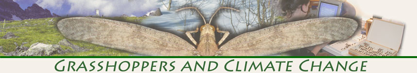
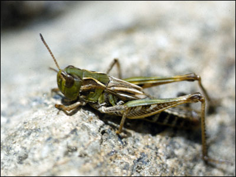

Gordon Alexander, Grasshoppers, and Climate Change
The effects of global climate change on our planet are beginning to be measured and assessed. Insects have proven to be particularly good indicators of these changes and museum natural history collections have been vital to such studies because the specimens housed there provide a record of when and where species were previously found. Coupling of collection data from the past with current collecting efforts make it possible to determine whether species distributions, abundances, and phenologies have changed and to what degree they have done so. Historical collections and natural history observations are not only allowing us to document the effects of climate change, they may also help us understand why some species are more impacted than others. We are using a historical collection of Colorado grasshoppers, coupled with a 5-year resurvey effort, to try to understand how climate change impacts populations, species, and communities of insects.

Aeropedellus clavatus F by Don Van Horn
From the 1930s to the early 1970s, Dr. Gordon Alexander and his students surveyed the grasshoppers of Northern Colorado. From these surveys, Dr. Alexander assembled an important voucher collection of over 24,000 grasshopper specimens, which recently has been curated and databased. The Alexander Orthoptera Collection is housed in the Entomology Section of the University of Colorado Natural History Museum. We are currently using this historical collection and the data from our resurvey project to understand how climate change may be impacting regional grasshoppers. The following links will guide you through the several different features of the Alexander Orthoptera Collection and Resurvey Project.
The Alexander Collections Improvement Project: With support from the National Science Foundation (NSF)’s Biological Research Collections program (NSF #0447315), the 24,000 grasshoppers that make up the Alexander Orthoptera collection were identified, curated and databased. This page documents the process of accessioning Alexander’s substantial collection into the Entomology Collection.
The Current Resurvey Project: In 2007, we were awarded a NSF grant to use Gordon Alexander’s Orthoptera Collection to examine the effects of climate change on regional grasshoppers (NSF #0718112). The 1958-1960 Alexander survey collected at 14 main sites, several of which were associated with permanent long term weather stations, and during this survey, nearly 65,000 grasshopper specimens were processed. We are using Alexander’s survey data to create a baseline of the distribution and phenology of regional grasshoppers from nearly a half century ago.
Project Data: With support from the NSF Biological Research Collections program, we identified, curated and databased the 24,000 grasshoppers that make up the Alexander Orthoptera Collection (NSF #0447315). This page allows the user to explore the Alexander Collection data and use our interactive map to explore Alexander’s main collecting sites. In the future, weather data associated with several of Alexander’s collecting sites will also be available.
A Biography of Gordon Alexander: Gordon Alexander (1901-1973) was a professor at the University of Colorado from 1939 to 1966, where he served as the chair of the Biology Department for nearly 20 years. This section includes a biography of Gordon Alexander, copies of his publications and information about his students and collaborators. This section also provides information on Alexander's 1958-1960 grasshopper survey.

 For general questions or comments, please email cumuseum@colorado.edu.
For general questions or comments, please email cumuseum@colorado.edu.
©2008 CU Museum, UCB 218, University of Colorado, Boulder, Colorado 80309 tel: (303)492-6892